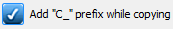
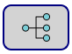

Funzionalità Crosstable Editor
 Se abilitato, durante la fase di copia/taglia e incolla, aggiunge il prefisso C_ nella nuova variabile per evitare problemi nella gestione degli allarmi. Abilitato di default.
Goto Section: permette la navigazione all’interno della Crosstable.
Retentive [1 - 192]: variabili che mantengono il proprio valore allo spegnimento del dispositivo;
Not Retentive [193 - 4999]: variabili che perdono il proprio valore allo spegnimento del dispositivo;
Diagnostic [5000 - 5171]: variabili di diagnostica. Vengono utilizzate se si comunica con un protocollo diverso da “PLC”. Per approfondimenti vedere il capitolo “Variabili di diagnostica”
Node Status [5172 - 5299]: variabili che indicano lo stato dei nodi. Vengono utilizzate se si comunica con un protocollo diverso da “PLC”.
Local I/O [5300 - 5389]: variabili relative agli ingressi e uscite del dispositivo. Queste variabili possono essere rinominate e modificate (in alcune parti) per permettere una maggiore flessibilità nel scrivere l’applicazione. Per approfondimenti vedere il capitolo “Variabili di prodotto”;
System [5390 - 5472]: variabili di sistema. Per approfondimenti vedere il capitolo “Variabili di prodotto”.
 Espande o comprime le righe vuote della Crosstable.
Espande o comprime le righe vuote della Crosstable.
 Effettua la ricerca avanzata di una o più variabili all’interno della Crosstable.
Effettua la ricerca avanzata di una o più variabili all’interno della Crosstable.
 Effettua il caricamento del file “Crosstable.csv” presente all’interno di un altro progetto. Il file importato andrà a sovrascrivere l’attuale file nel momento in cui si effettuerà un salvataggio.
Effettua il caricamento del file “Crosstable.csv” presente all’interno di un altro progetto. Il file importato andrà a sovrascrivere l’attuale file nel momento in cui si effettuerà un salvataggio.
 Abilita l'editing multiplo delle variabili all'interno della crosstable.
Abilita l'editing multiplo delle variabili all'interno della crosstable.
 Annulla l’ultima azione effettuata.
Annulla l’ultima azione effettuata.
 Salva le impostazioni attuali. Se si effettua una modifica ci sarà il bordo del bottone di colore rosso, altrimenti sarà verde.
Salva le impostazioni attuali. Se si effettua una modifica ci sarà il bordo del bottone di colore rosso, altrimenti sarà verde.
 Verifica la correttezza della tabella.
Verifica la correttezza della tabella.
 Lancia il programma del PLC. Se non ci sono errori nella Crosstable sarà possibile aprire il software del PLC. Per approfondimenti vedere il capitolo “Aprire il software PLC”.
Lancia il programma del PLC. Se non ci sono errori nella Crosstable sarà possibile aprire il software del PLC. Per approfondimenti vedere il capitolo “Aprire il software PLC”.
 Abilita tutte e sole le variabili di diagnostica dei nodi e dei fieldbus esistenti (vedi Crosstable sezione Diagnostic e Node Status).
Premendo il tasto destro del mouse sulla tabella è possibile effettuare alcune operazioni:

Goto Line: seleziona direttamente la linea desiderata.
Insert Blank Rows: inserisce una riga vuota.
Clear Rows: elimina il contenuto della riga selezionata.
Delete Rows: elimina una o più righe selezionate.
Copy Rows: copia una o più righe selezionate.
Cut Rows: taglia una o più righe selezionate.
Paste Rows: incolla una o più righe selezionate.
Paste MPNC006 Modules: incolla tutte le variabili associate ai modelli remoti MPNC006 e moduli collegati (MPNC020 / MPNC030 / MPNC035).
Paste MPNE1001 Module: incolla tutte le variabili associate ai modelli remoti MPNE.
Paste TPLC050 Modules: incolla tutte le variabili associate ai moduli remoti (MPNC020 / MPNC030 / MPNC035).
Paste MPSN100 Module: incolla tutte le variabili associate ai sensori della famiglia MPSN100 (temperatura, umidità...).
Variabile di ALLARME / EVENTO:
Se vogliamo utilizzare una variabile come allarme/evento dobbiamo indicarlo nel campo “Behavior”
ma è possibile solamente se:
Il campo “Priority” è diverso da “0”;
Il campo “Update” è diverso da “H”;
Il campo “Type” è uguale a “BIT”;
Con queste impostazioni è possibile scegliere la condizione di allarme/evento.

Le variabili presenti nel menu a tendina sono tutte quelle presenti nella Crosstable, comprese quelle di sistema,
ad esclusione delle variabili che hanno nel campo “Update” il valore “H” e quelle che hanno nel campo “Priority”
il valore “0”.